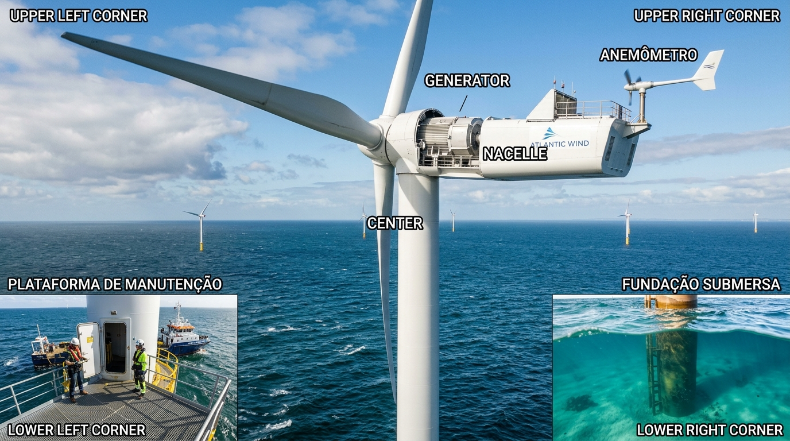

1. Ponta da Pá Eólica
A ponta da pá eólica (ou tip) é a extremidade final da lâmina do aerogerador. Ela geralmente contém um componente metálico integrado a um sistema de para-raios e atinge velocidades tangenciais extremamente altas, podendo ultrapassar os 280 km/h durante a rotação.
2. Anemômetro
O anemômetro é o instrumento usado para medir a velocidade, a força e, em alguns modelos, a direção do vento ou de fluxos de ar em tubulações. Ele é amplamente aplicado na meteorologia, na aviação, em usinas eólicas, na agricultura e em sistemas de climatização.
3. Nacele Principal
estrutura ou compartimento aerodinâmico projetado para abrigar componentes essenciais, sendo amplamente utilizado em dois setores principais: a energia eólica e a aviação
4. Plataforma de Acesso
equipamento de elevação (máquinas móveis usadas na construção civil para alcançar locais altos com segurança)
5. Fundação Marítima
O termo também pode descrever a engenharia de fundações subaquáticas (estacas e cortinas) para pontes e estruturas no mar.